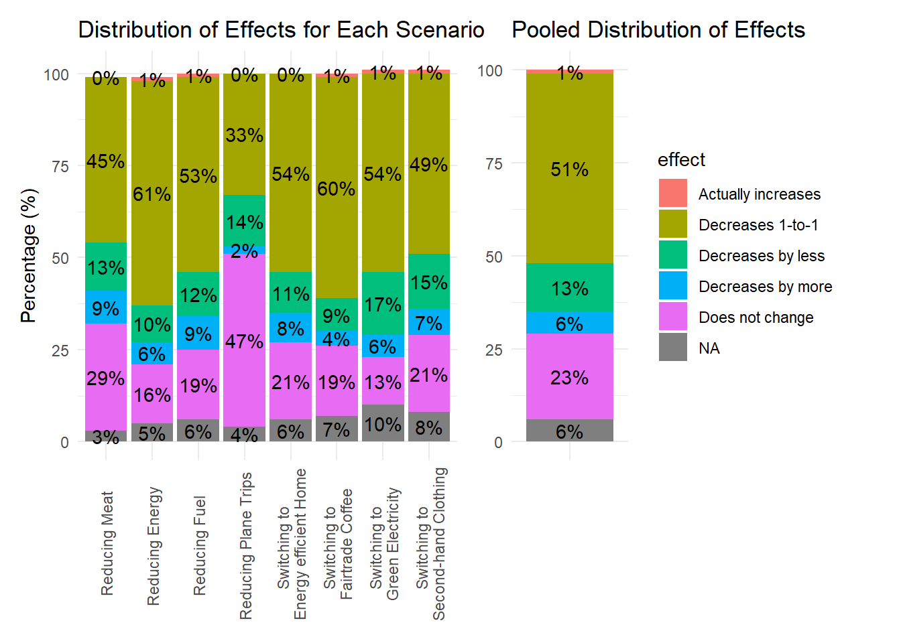
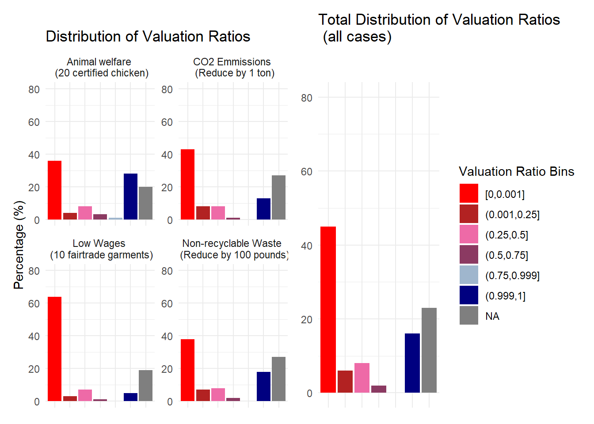

Data Report 3
Dataset
Source: We use the dataset from a survey run by Kaufmann, Andre, and Kőszegi. Their study analysed the behaviour of consumers, their social concerns and their beliefs on market dampening. For this data report however, we will only use a fraction of the available data in order to replicate two graphs and shortly look at the relationship between some background characteristics and differing beliefs.
Cleaning
Cleaned Documentation - the original name is in brackets if it is changed:
scenario(vig): contains eight scenarios that are subsequently used to assess dampening effects: fuel, meat, flights, subelectricity, subhouse, energy, subclothing, subcoffee. Note that the prefix
subindicates switching to a more sustainable counterpart, while the others refer to reducing the consumption of said good. Saved as a factor.conseq: contains four scenarios that are used to assess concerns for consequences: textile(wages), chicken(animal welfare), co2(emmissions), (non-reciclable)waste. Saved as factor.
effect: the dampening effect that consumers expect the market to exert. Goes from 1 to 5: 1(decrease by more), 2(decrease one-to-one), 3(decrease by less), 4(no effect), 5(actually increase). Saved as factor.
conseq_positive(wtp_1) - Social concerns in an effective situation (when their action has a positive consequence). Ranges from 0 to 10000. Saved as numeric.
conseq_negative(wtp_2) - Social concerns in an ineffective situation. Otherwise same as above.
politics - Political affiliation. Ranges from 1 to 3: Republican, Democratic and Independent. Saved as factor
Gender - Ranges from 1 to 5: Male, Female, Non-Binary, Self-Describe, Prefer not to say. Saved as factor.
Age - Saved as numeric.
Exploration
- Replicating
fig_beliefs.pdf
- Replicating
fig_conseq.pdf

- Let’s see how three types of background information affect the respondents’ dampening beliefs. The results will be discussed in the following section.
- Age

- Gender

- Lastly, political affiliation. Though not necessary, I have included the NAs because it is quite interesting that some people have refused responding to this question, yet present themselves in an effect category.

Conclusions
Age does seem to make an important difference in how people assess dampening. People under 21 are the most likely to believe their changes in consumption mean little in the big scheme of things (effect 4), but this drops in proportion for other age groups and for the most elderly, it is non-existent. The opinion that decreasing one’s consumption means a 1:1 reduction in aggregate consumption is the most popular amongst all age groups (effect 2) and seems to increase the older an individual is.
In regards to gender, females and males are quite similar, the only difference being that females are slightly more convinced by the 1:1 reduction option. Non-binary people represent more heterogeneity in their responses, as many believe their effect would be less than 1:1.
In regards to political affiliation, republicans and independents seem the most alike in their response. Democrats are slightly less likely to believe their change of behaviour would not make lead to any aggregate change, and more likely to pick the 1:1 option.
Code Explanation
I will explain the creation of the first figure. The logical order behind this task was to 1. create the plot for each scenario, 2. create the plot for the percentages of all scenarios combined, 3. find a way to combine them.
individual_plot <- ggplot(percentages, aes(x = scenario, y = percentage, fill = effect)) +
geom_col(show.legend = F) +
geom_text(aes(label = paste0(percentage, "%")), position = position_stack(vjust = 0.5), color = "black") +
labs(x = NULL, y = "Percentage (%)", title = "Distribution of Effects for Each Scenario") +
theme_minimal() +
theme(axis.text.x = element_text(angle = 90, vjust = 0.5))For 1, I have created a plot of percentages, with the x axis as scenario and y as percentages, and of course coloured by the effect. Note that this graph does not have a legend because it will share the same legend with the second one. To create the on-text percentages i needed to attach the string % to the percentages taken from the percentage object. Then, I put the ylab (xlab is not included) and a title. Theme_minimal() assures that both graphs will have a common white background. Then, I edit the x scenario labels to put them vertically because they are too long to present otherwise.
pooled_plot <- ggplot(pooled_percentages, aes(x = "", y = pooled_percentage, fill = effect)) +
geom_bar(position = "stack", stat = "identity") +
labs(x = NULL, y = NULL, title = "Pooled Distribution of Effects") +
theme_minimal()For 2, I skipped defining X because I want the results in a single bar and I am directly using the data from the object on the y axis. Then, I defined it as a geom_bar stacked onto each other. The other parts are quite intuitively similar to the 1.
(combined_plot <- individual_plot | pooled_plot +
plot_layout(
ncol = 2,
widths = c(3, 1)
))For 3, I have used the patchwork package that allows for very easy combination of graphs. Therefore it was as easy as saving 1. and 2. into objects and then doing 1 | 2 (1+2 would have also done the same). I mentioned the width and that the plot should be arranged in two columns